BBST
BSST Team | ZWU
2024.6
1.Class Practice
(AUTODESK FUSION & SHAPR 3D)
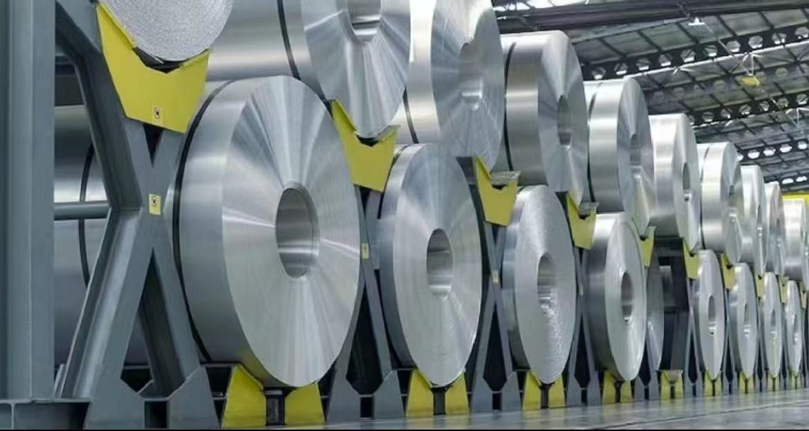
Course → Material
1.Common materials in daily life
Laser holographic materials
are a new type of material widely used in packaging and
anti-counterfeiting printing. The raw materials used for laser
holographic films mainly include PVC, PET, OPP, BOPP, etc. The varieties
include laser aluminum coating, laser transparent polishing film, laser
hot stamping paper, laser transfer paper, etc. The colors include gold,
silver, red, blue, green, black, etc. Laser holographic materials
integrate laser holographic image anti-counterfeiting technology with
printing and decoration technologies such as hot stamping and molding,
which have good anti-counterfeiting effects. This not only improves the
decoration effect of the product, but also adds anti-counterfeiting
performance. In addition, laser holography technology is combined with
other technologies to produce products such as laser holography with
fluorescent anti-counterfeiting film, flexible transparent laser
holography anti-counterfeiting film, and atomic nucleus confidential
anti-counterfeiting laser holography film, which further improves the
quality and anti-counterfeiting effect of laser holography film.
2.Two new materials
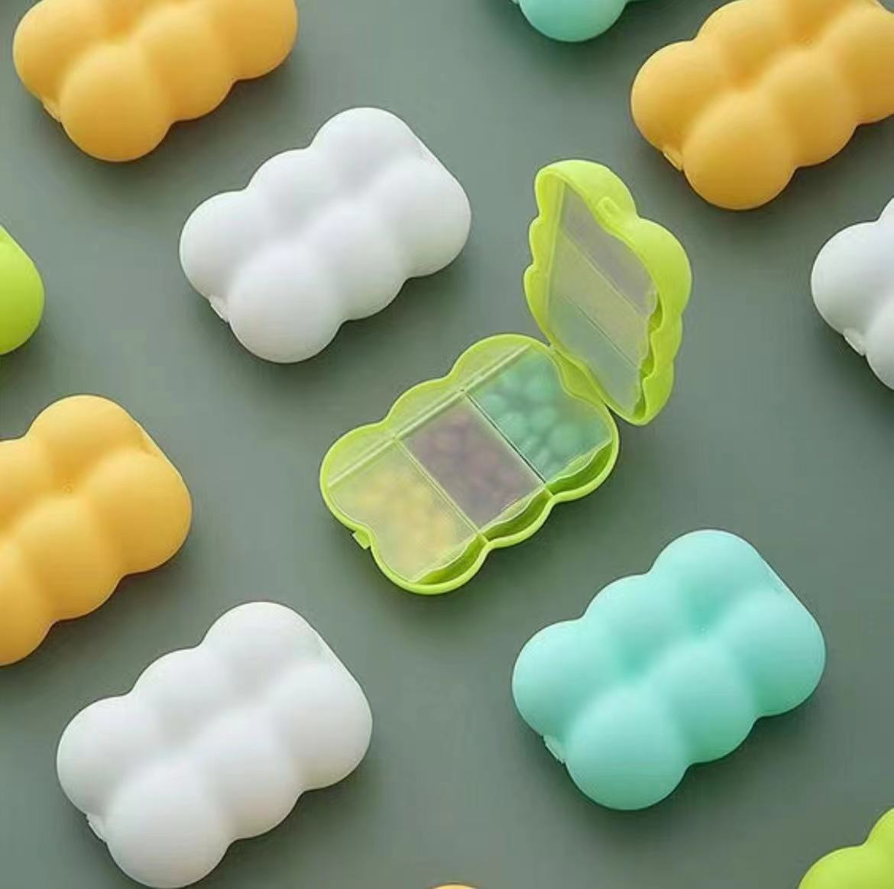
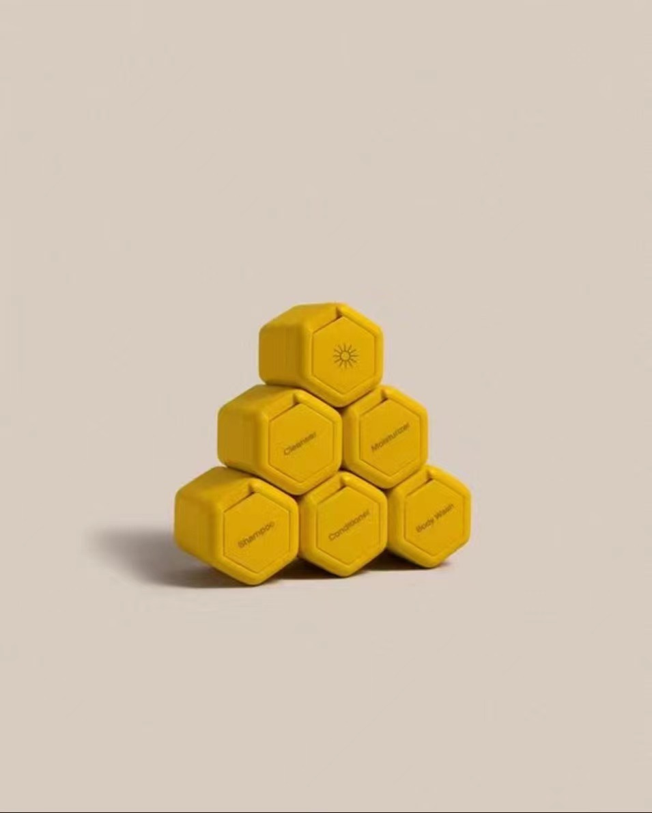
Analysis of advantages and disadvantages of polyethylene insulation：
1. Advantages
(1) Lightweight: Polyethylene insulation board has a low density and weight, which can reduce building loads.
(2) Insulation: Polyethylene insulation board has good insulation performance and can reduce energy consumption.
(3) Waterproof and moisture-proof: Polyethylene insulation board has excellent waterproof and moisture-proof properties, which can reduce leakage.
(4) Easy to construct: The construction of polyethylene insulation board is simple and fast, which can shorten the construction period.
(1) Lightweight: Polyethylene insulation board has a low density and weight, which can reduce building loads.
(2) Insulation: Polyethylene insulation board has good insulation performance and can reduce energy consumption.
(3) Waterproof and moisture-proof: Polyethylene insulation board has excellent waterproof and moisture-proof properties, which can reduce leakage.
(4) Easy to construct: The construction of polyethylene insulation board is simple and fast, which can shorten the construction period.
2. Disadvantages
(1) Easy to age: Polyethylene insulation boards are prone to aging over time, resulting in a decrease in insulation effectiveness.
(2) Flammable: Polyethylene insulation board is flammable, and safety precautions should be taken during construction.
(1) Easy to age: Polyethylene insulation boards are prone to aging over time, resulting in a decrease in insulation effectiveness.
(2) Flammable: Polyethylene insulation board is flammable, and safety precautions should be taken during construction.
Reference link for laser holographic materials:
【二维码防伪标签的技术原理,制作过程及防伪效果】https://mr.baidu.com/r/1lrpmwDQmbK?f=cp&rs=194211003&ruk=nkomwqMWdZ5oHqM2DexJvg&u=25ce757606f17bf6
【二维码防伪标签的技术原理,制作过程及防伪效果】https://mr.baidu.com/r/1lrpmwDQmbK?f=cp&rs=194211003&ruk=nkomwqMWdZ5oHqM2DexJvg&u=25ce757606f17bf6
 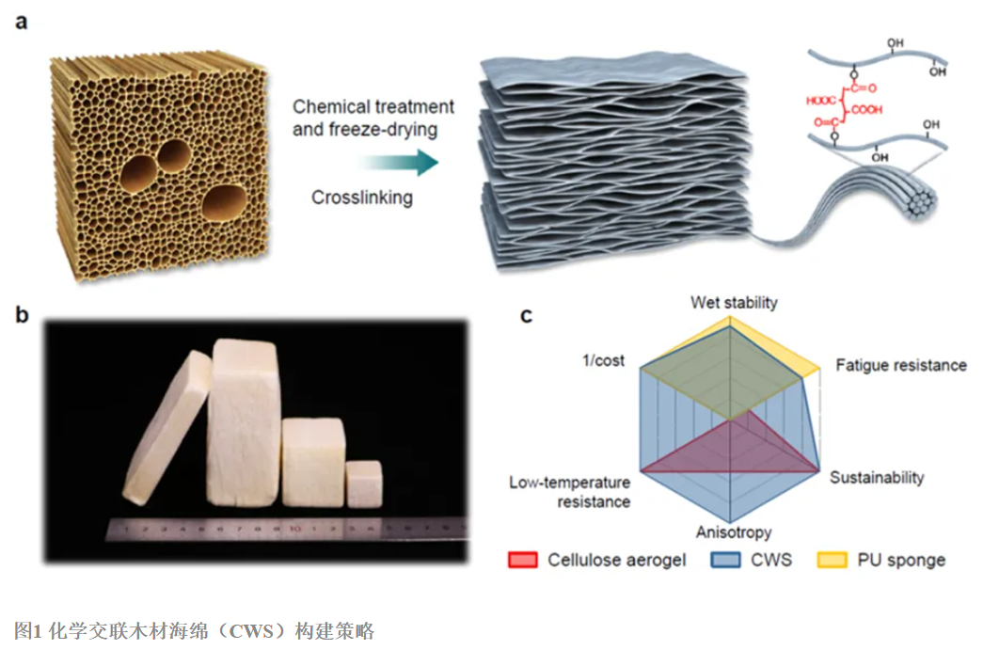
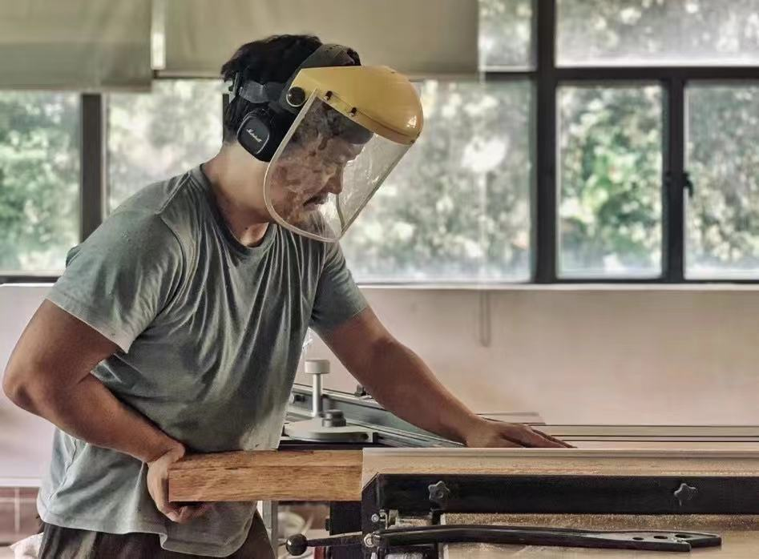
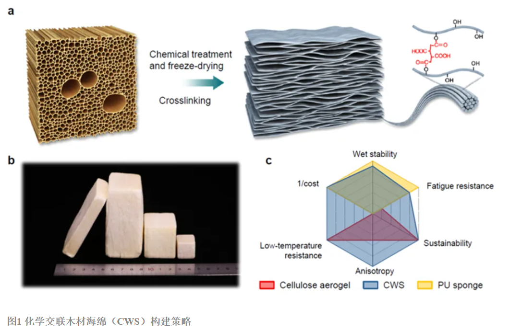
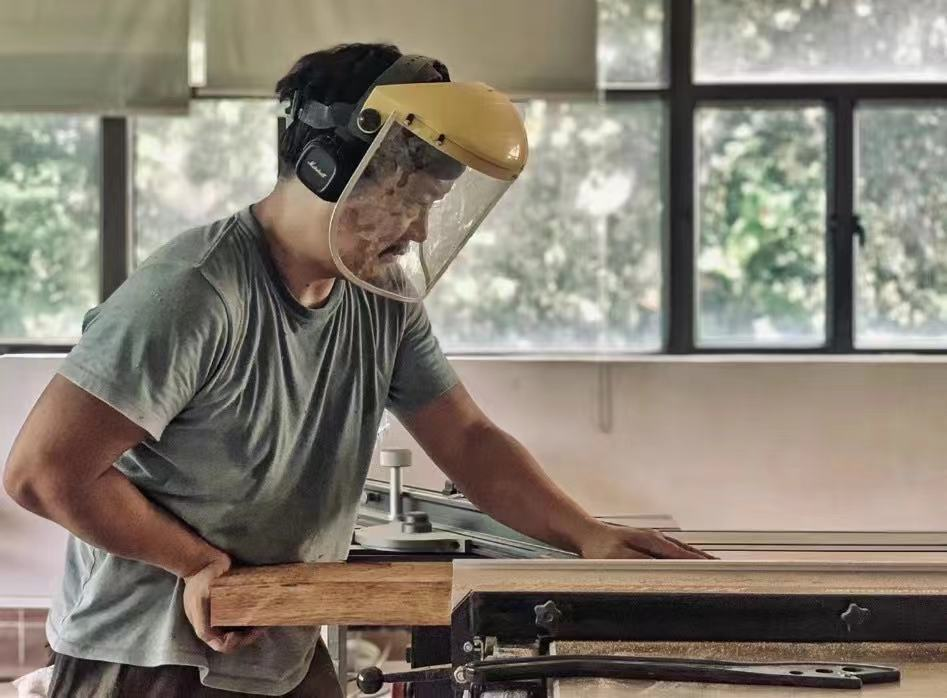

When woodworking wood, due to the large amount of wood dust, N95 grade
masks are sufficient
After inhaling wood dust, it is prone to respiratory and pulmonary inflammation. And it's very painful, so be sure to take good respiratory protection measures.
To prevent lung injury, in addition to dust reduction and sealing in the work environment, individuals need to scientifically choose dust masks.
Dust masks, as special labor protection equipment, must be certified by GB2626-2006.
1. Therefore, when choosing a mask, it is also necessary to choose according to the national standard. In the national standard, for dust and oily particles, protective masks are divided into oil proof (oil smoke, oil mist, dust, smoke, mist, microorganisms, represented by KP) and dust proof (dust, smoke, mist, microorganisms). For dust prevention, there are three levels of protection: KN100, KN95, and KN90. The protection rates for ultrafine dust are ≥ 99.97%,>95%, and>90%, respectively.
2. Masks are divided into disposable, replaceable filter type half masks, and full face masks. For long-term occupational protection use, especially in environments with high dust concentration, heavy smoke and other ultra-fine particles, it is recommended to use a replaceable filter cotton type half face mask. Disposable masks are mostly of no size and are relatively low-grade.
3. Mask materials include silicone, plastic, etc. Silicone materials are relatively soft and comfortable, with low facial pressure.
4. The size of the mask is divided according to the national standard, which is particularly important. Many masks are not numbered, and the effect will vary from person to person.
5. There are two types of masks: covering the mouth, nose, and jaw. The second type has a large contact mask, good sealing, and low pressure.
6. Do not ignore respiratory protection. Using fake and inferior masks, gauze, towels, etc. as masks can easily lead to the occurrence of lung diseases. At present, some common N100 level dust masks can ensure protection while breat
After inhaling wood dust, it is prone to respiratory and pulmonary inflammation. And it's very painful, so be sure to take good respiratory protection measures.
To prevent lung injury, in addition to dust reduction and sealing in the work environment, individuals need to scientifically choose dust masks.
Dust masks, as special labor protection equipment, must be certified by GB2626-2006.
1. Therefore, when choosing a mask, it is also necessary to choose according to the national standard. In the national standard, for dust and oily particles, protective masks are divided into oil proof (oil smoke, oil mist, dust, smoke, mist, microorganisms, represented by KP) and dust proof (dust, smoke, mist, microorganisms). For dust prevention, there are three levels of protection: KN100, KN95, and KN90. The protection rates for ultrafine dust are ≥ 99.97%,>95%, and>90%, respectively.
2. Masks are divided into disposable, replaceable filter type half masks, and full face masks. For long-term occupational protection use, especially in environments with high dust concentration, heavy smoke and other ultra-fine particles, it is recommended to use a replaceable filter cotton type half face mask. Disposable masks are mostly of no size and are relatively low-grade.
3. Mask materials include silicone, plastic, etc. Silicone materials are relatively soft and comfortable, with low facial pressure.
4. The size of the mask is divided according to the national standard, which is particularly important. Many masks are not numbered, and the effect will vary from person to person.
5. There are two types of masks: covering the mouth, nose, and jaw. The second type has a large contact mask, good sealing, and low pressure.
6. Do not ignore respiratory protection. Using fake and inferior masks, gauze, towels, etc. as masks can easily lead to the occurrence of lung diseases. At present, some common N100 level dust masks can ensure protection while breat
Steel parts undergo oxidation treatment to form a protective oxide film on
the surface, mainly composed of magnetic iron oxide (Fe3O4). The color of
the film is generally black or blue black, while cast steel and silicon
steel are brown or black brown.
The oxidation treatment methods include alkaline oxidation, alkali free oxidation, and acidic oxidation. Commonly used for the protection and decoration of machinery, precision instruments, instruments, weapons, and daily necessities.
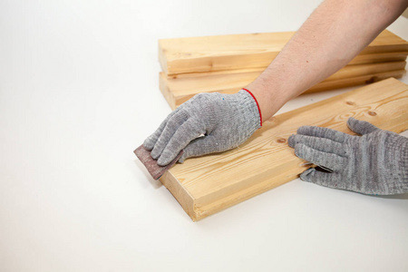
The oxidation treatment methods include alkaline oxidation, alkali free oxidation, and acidic oxidation. Commonly used for the protection and decoration of machinery, precision instruments, instruments, weapons, and daily necessities.
4.ntroduce detail al materails in your final project

 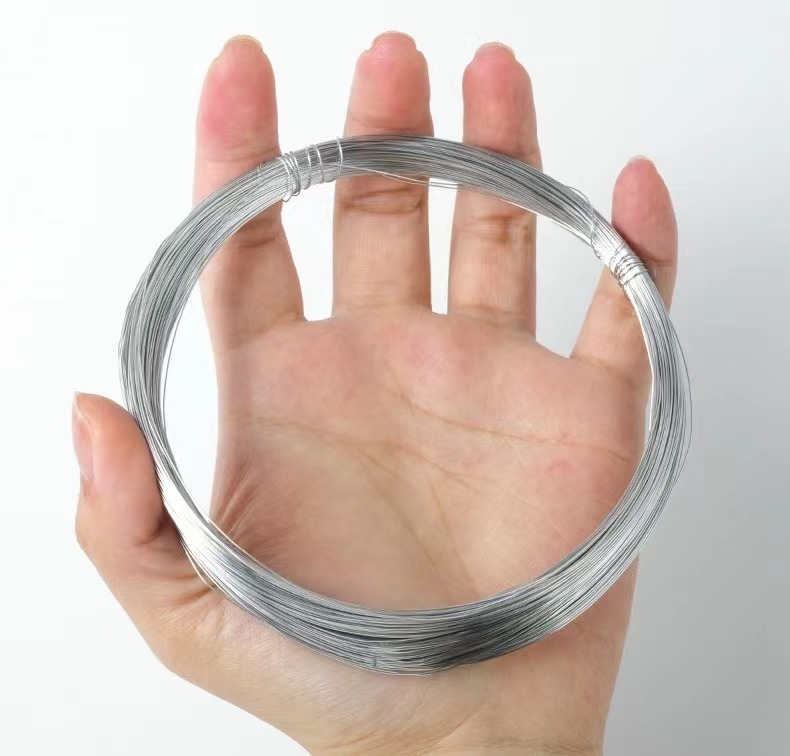
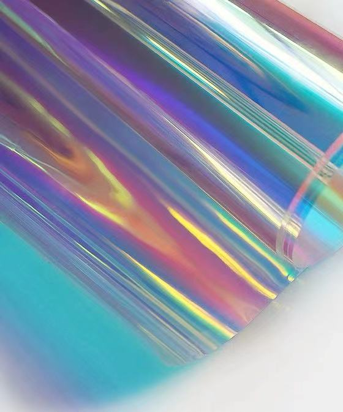
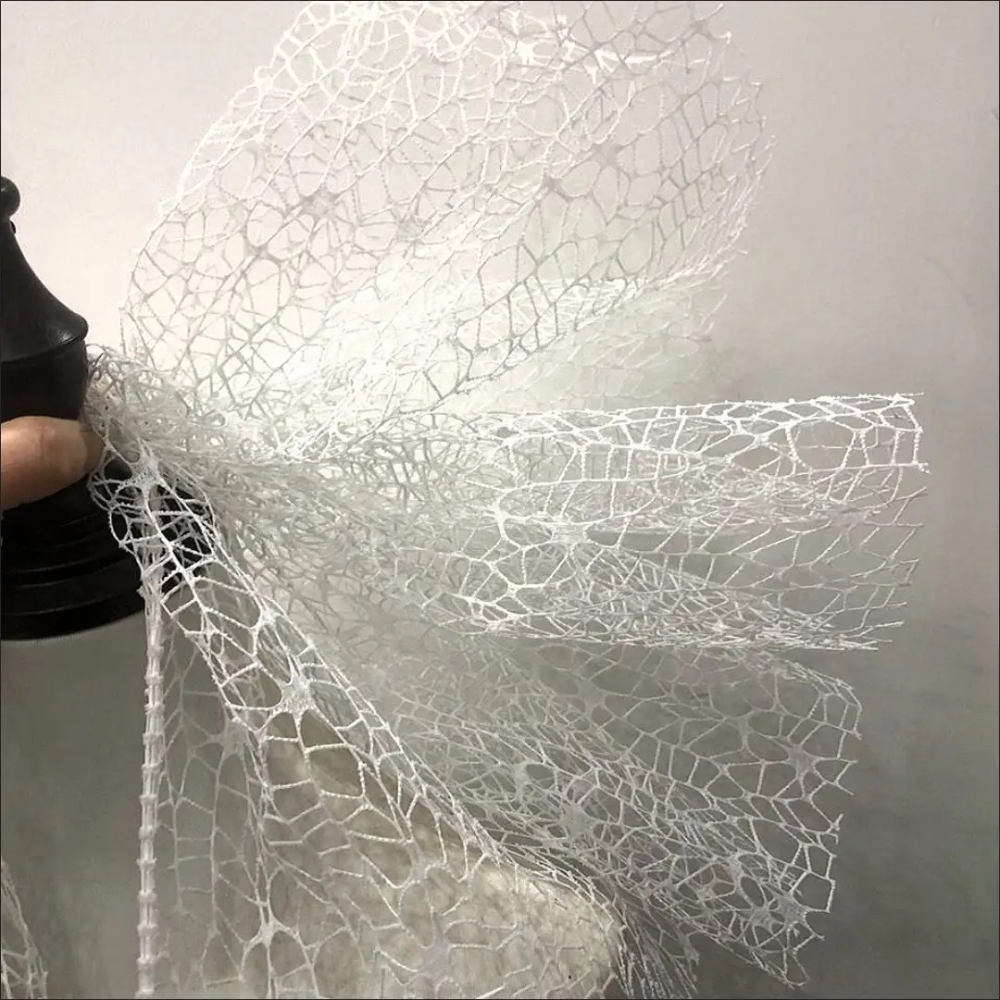
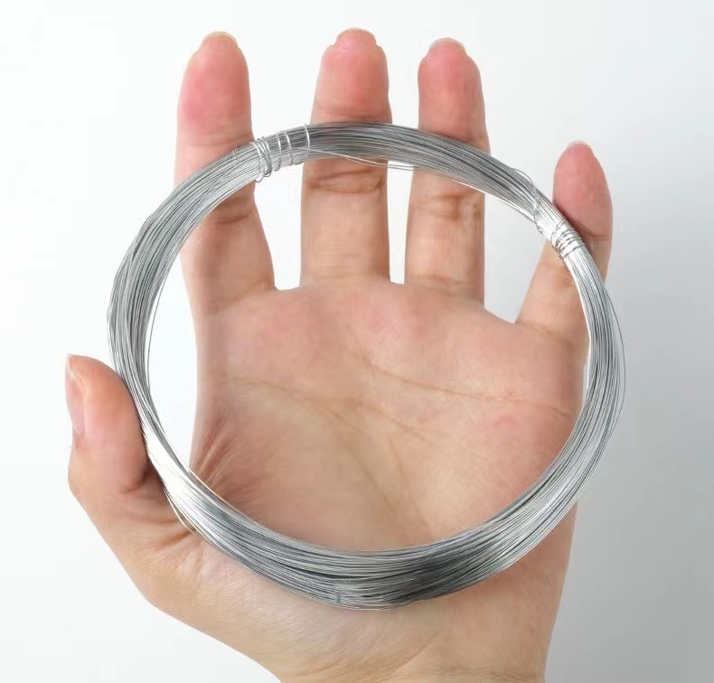
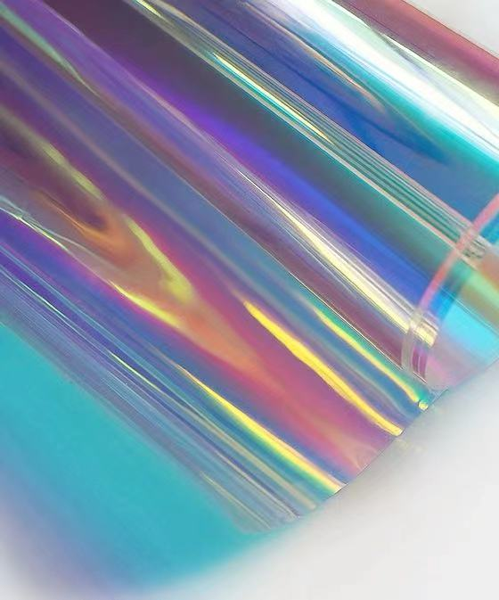
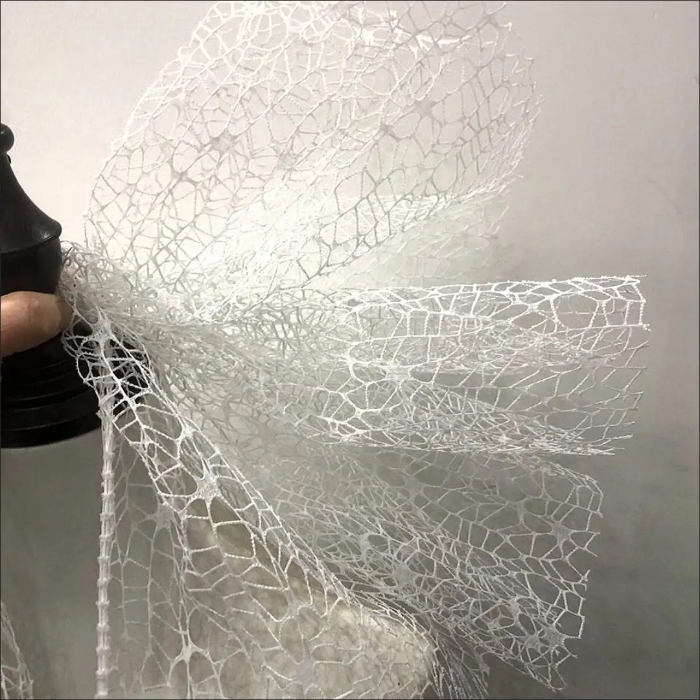

Plastic
:
Polyethylene（PE） is the most common type of plastic. It's used in
a variety of products, from plastic bags to water bottles, toys, and
even bulletproof vests. It's known for its durability and
flexibility.
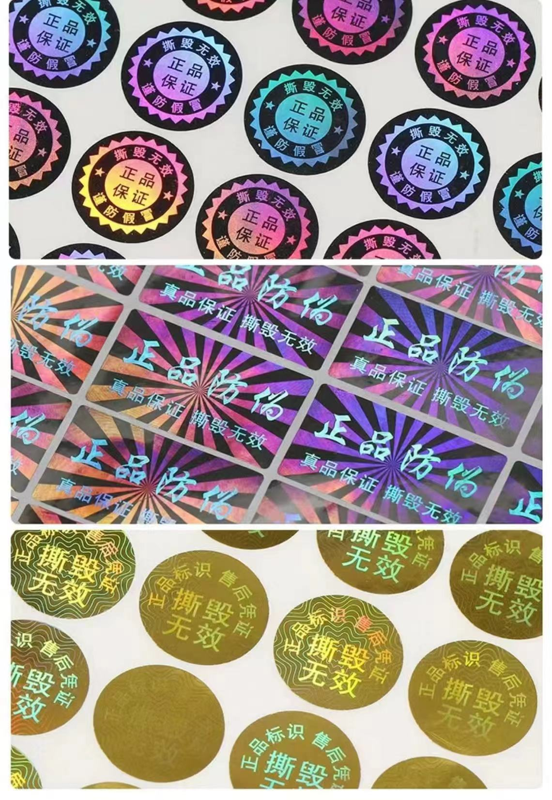
Wood sponge
is made by treating with chemicals, peeling off hemicellulose and
lignin, and can absorb oil from water. The absorption amount is 16-46
times its own weight, and it can be reused up to 10 times.This new type
of sponge surpasses all other sponges or absorbers we use today in terms
of capacity, quality, and reusability.Future development trend: Oil and
chemical spills have caused unprecedented damage to water bodies around
the world. As a green way to clean up the ocean, wooden sponges can
effectively solve this problem.
0.5mm iron wire
https://m.tb.cn/h.ggvfFUqvNdc0nDS?tk=VjjKWAgIQJA CZ0012
https://m.tb.cn/h.ggvfFUqvNdc0nDS?tk=VjjKWAgIQJA CZ0012
Cellophane
https://m.tb.cn/h.ggjQUMcGCYwR9NG?tk=lVkZWAgIAP5 HU9196
https://m.tb.cn/h.ggjQUMcGCYwR9NG?tk=lVkZWAgIAP5 HU9196
Textured paper
https://mobile.yangkeduo.com/goods.html?ps=J6dahIfztA
https://mobile.yangkeduo.com/goods.html?ps=J6dahIfztA
3D printing consumables
https://m.tb.cn/h.gT9CA9KyMIObupT?tk=KfGVWAgrky1
https://m.tb.cn/h.gT9CA9KyMIObupT?tk=KfGVWAgrky1